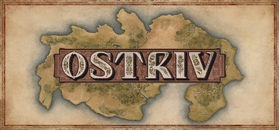
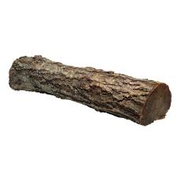
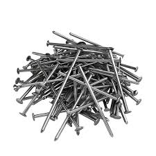
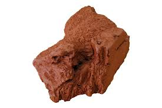
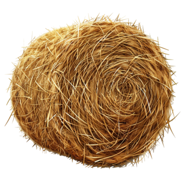

Ostriv: Українське містобудування
Ostriv — це містобудівна стратегія, яка вражає своєю деталізацією та атмосферою. Гравцеві належить очолити поселення та перетворити його на квітуче місто, дбаючи про потреби кожного жителя.
Галерея розбудови
Нижче наведені скріншоти ігрового процесу в різних форматах для детального ознайомлення:
Оригінальне зображення (клікніть для перегляду):

Детальний план (зменшено у 2 рази):
Панорамний вигляд (збільшено у 2 рази):
Економіка та ланцюжки ресурсів
Для успішного розвитку містечка необхідно правильно налагодити видобуток та логістику базових матеріалів.
| Матеріал | Цвяхи | Будівництво | Покрівля |
|---|---|---|---|
 |
 |
 |
 |
| Виробництво | Закупівля | Видобуток | Збір |
| Деревина | Цвяхи | Глина | Солома |
Увага! Не забувайте вчасно будувати комори, щоб ресурси не псувалися просто неба.